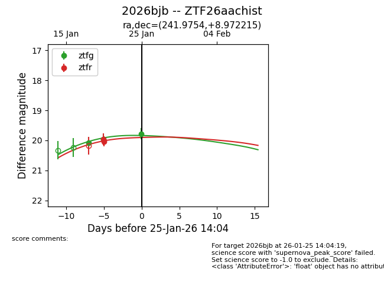
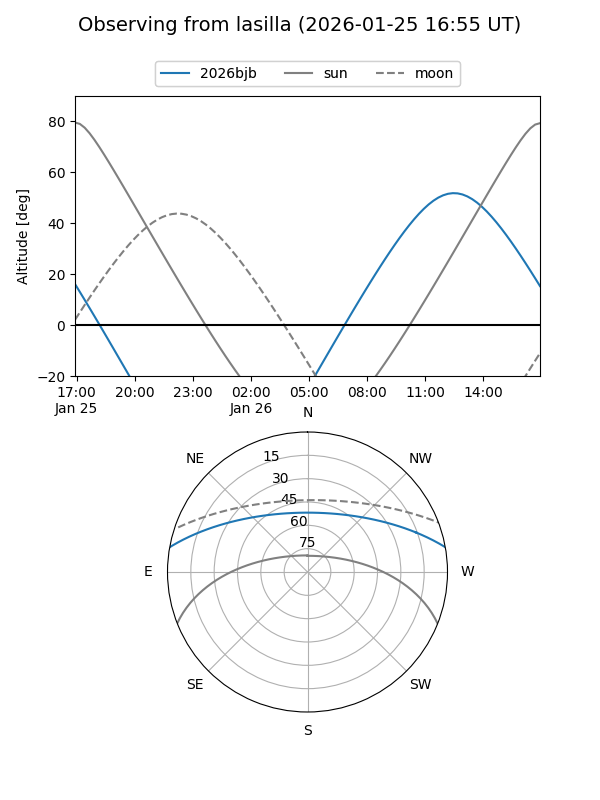
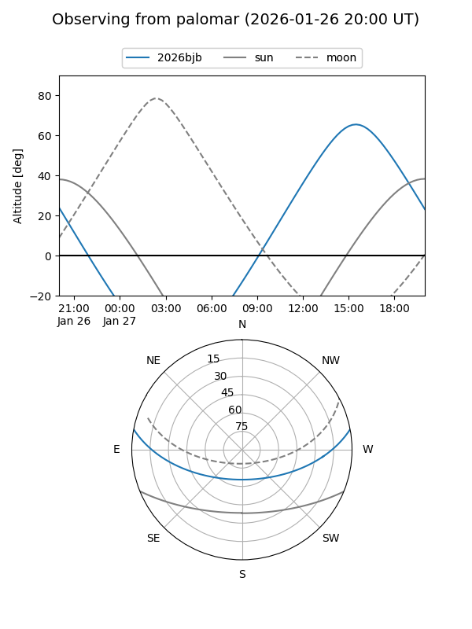
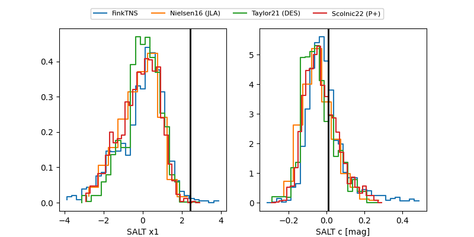

2026bjb
Target 2026bjb at 2026-01-26 21:36
Aliases and brokers:
FINK: link
Lasair: link
ALeRCE: link
TNS: link
YSE: link
alt names
ZTF26aachist (ztf,fink_ztf)
2026bjb (tns,yse)
Coordinates:
equatorial (ra, dec) = 241.9754,+8.97221
equatorial (HMS+DMS) = 16:07:54.11,+08:58:19.97
galactic (l, b) = (21.1324,+40.27895)
Flags:
Photometry:
last ztfg=19.78, ztfr=20.03
3 ztfg, 2 ztfr detections
Lightcurve

Visibility


Additional plots
